Steward
分享是一種喜悅、更是一種幸福
微電腦 - Nokia N810 - 終極改造
改造的原因是想把MiniSD換成MicroSD，然後想使用更大容量的電池，最後還是希望可以把UART接出來，這樣至少是一台比較完整的開發機器
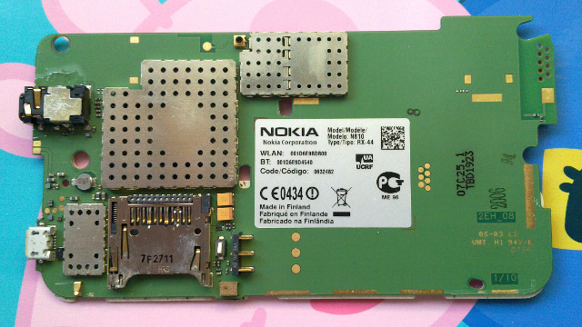
首先拿掉MiniSD
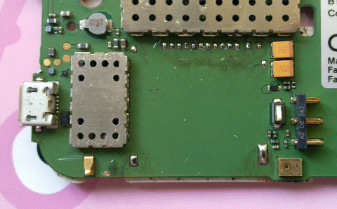
MicroSD
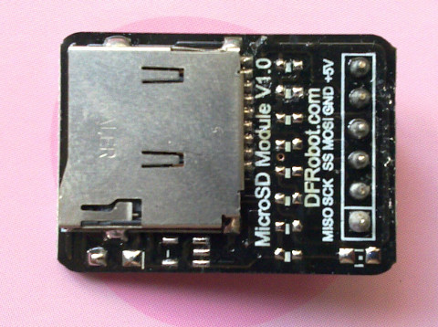
跳線
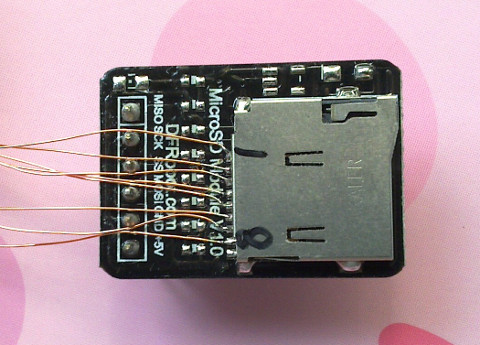
確定可以讀取到MicroSD內的資料
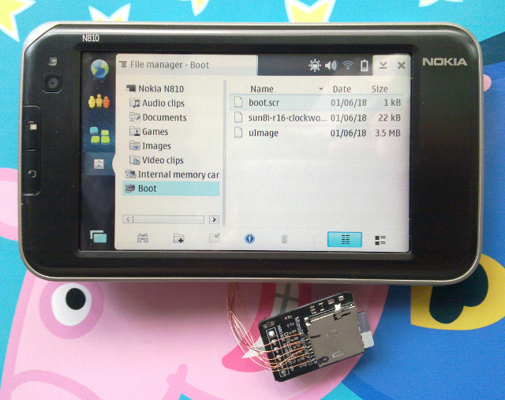
跳線的樣子
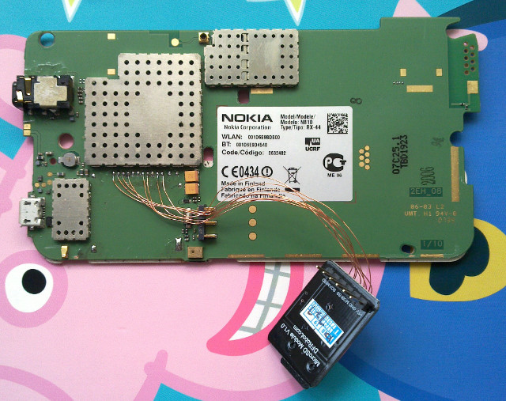
接著需要找一個可以放下MicroSD卡模組的位置
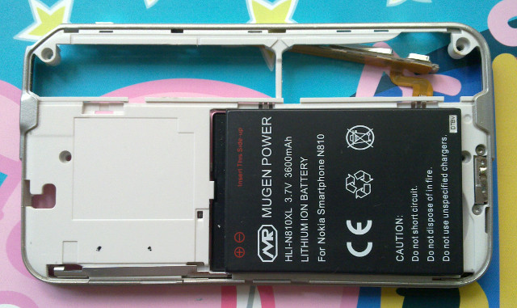
鑽洞，說實話，這殼還真是有夠硬
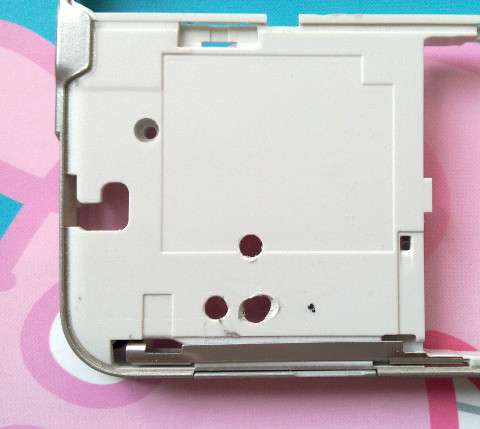
裁切PCB
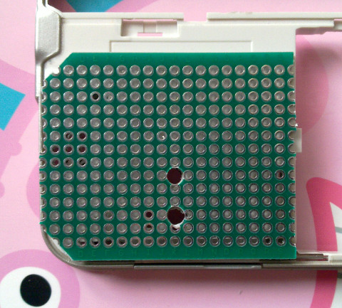
接著把USB、UART也都拉出來
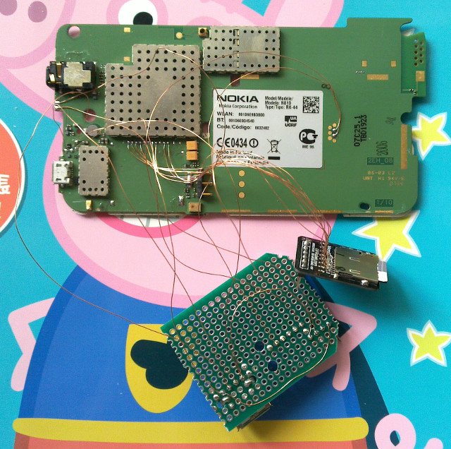
固定PCB
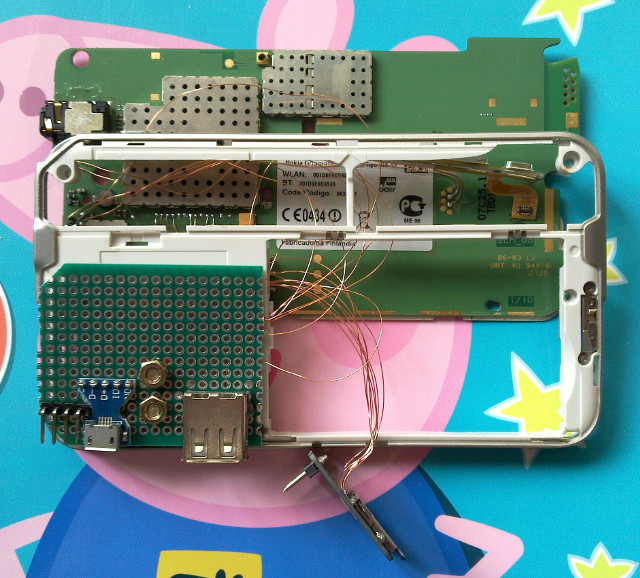
收線
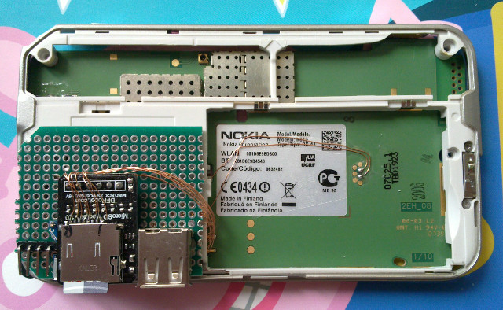
蓋上喇叭
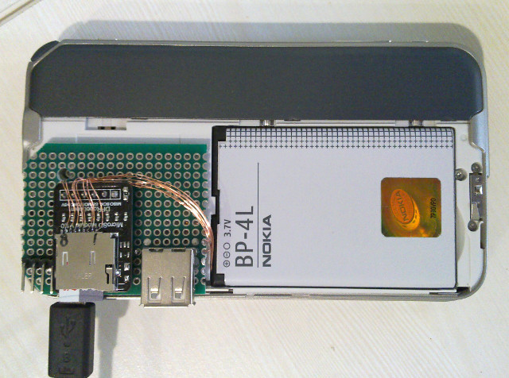
接著開始改造電池
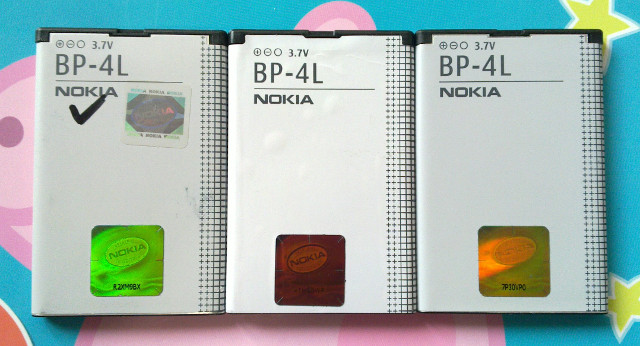
只需要電池芯
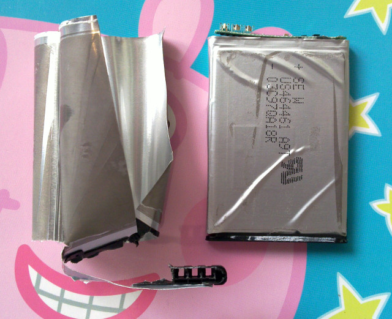
解焊後
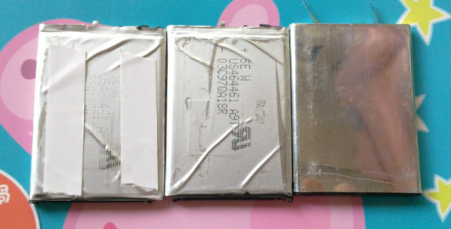
疊加在一起
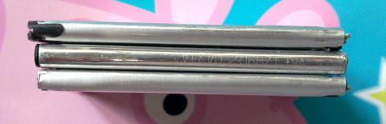
為了避免晃動造成接觸不良(N810通病)，司徒決定把電池焊死
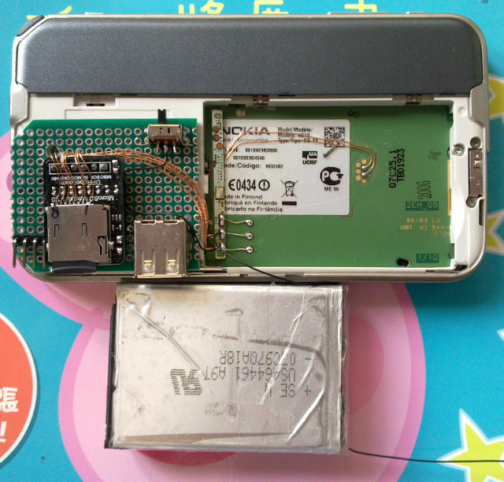
使用泡綿膠帶
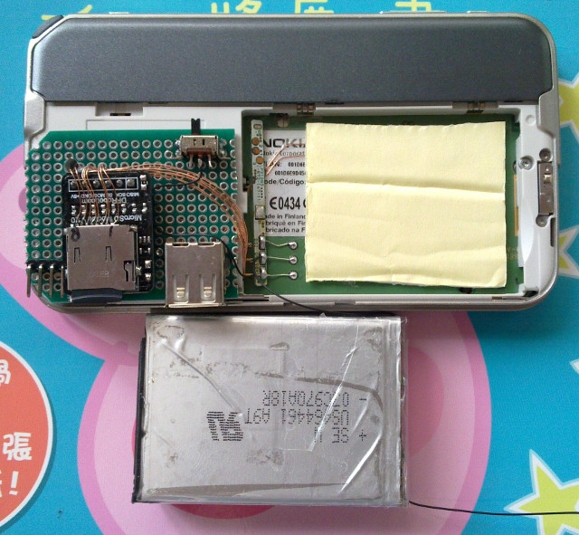
固定後
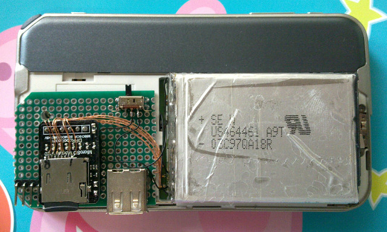
厚度
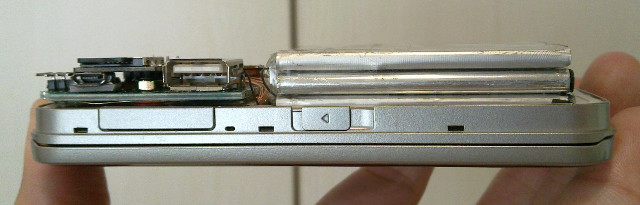
側邊
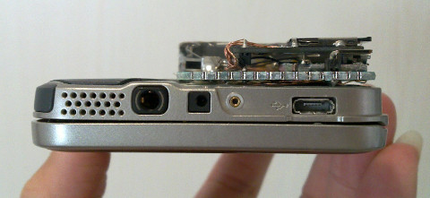
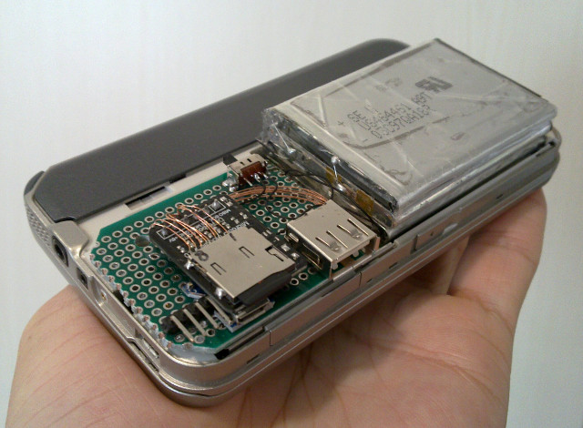
司徒使用OpenSCAD畫了一個專屬的外殼
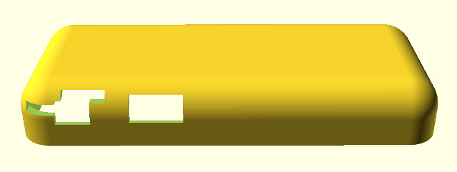
使用不太精密的3D印表機打印
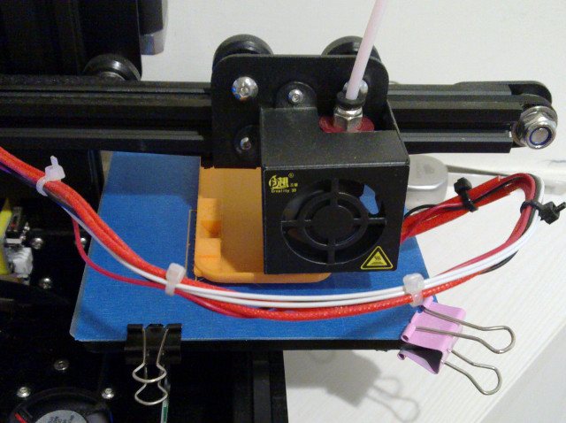
完成列印
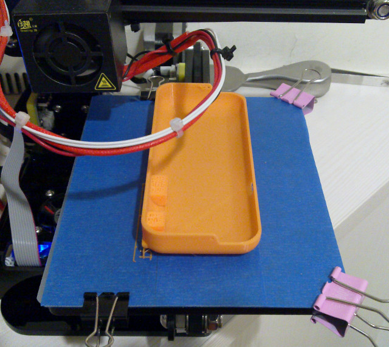
剛剛好
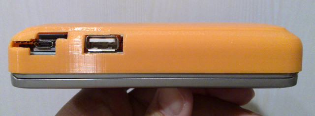
側邊
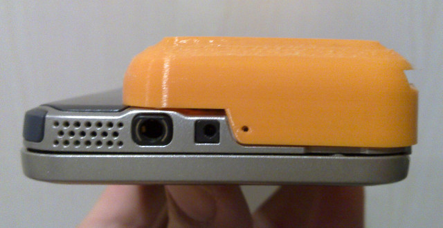
由於電池焊死，避免當機問題發生，司徒特意連接一個電源開關
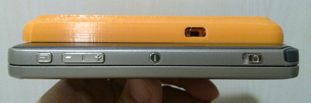
完美
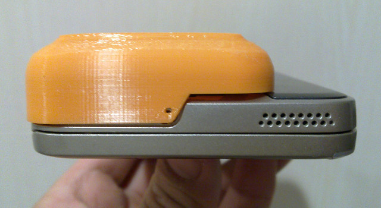
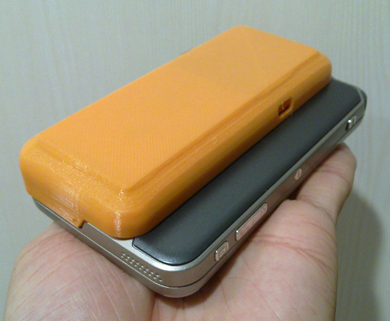
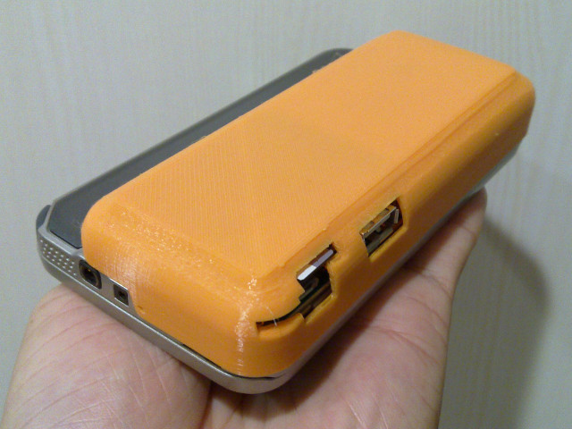
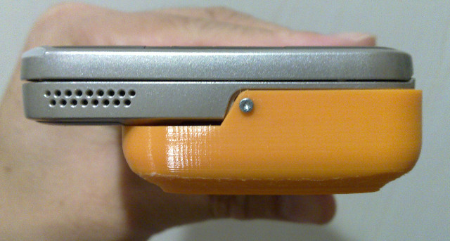
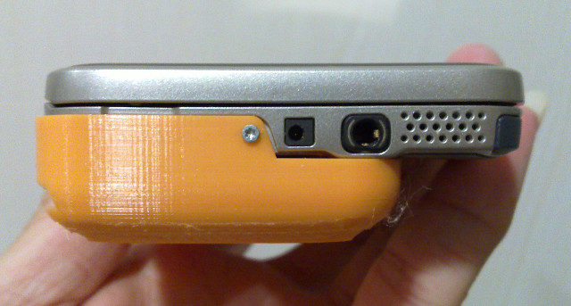
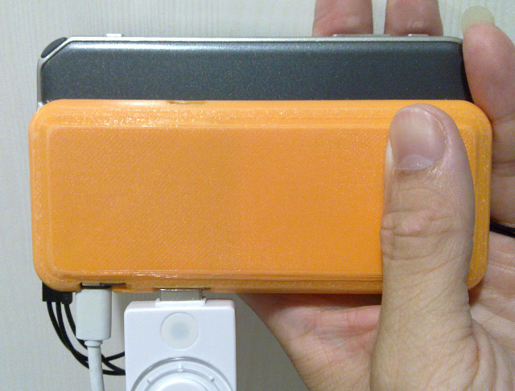